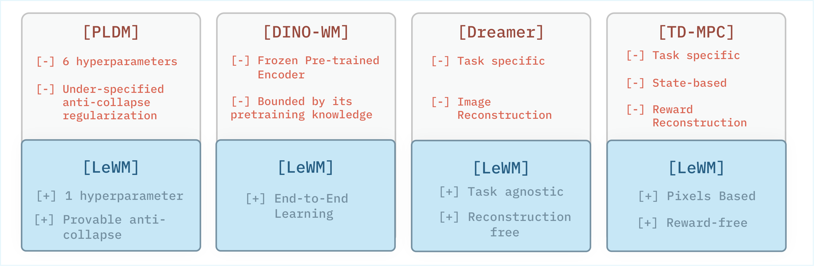
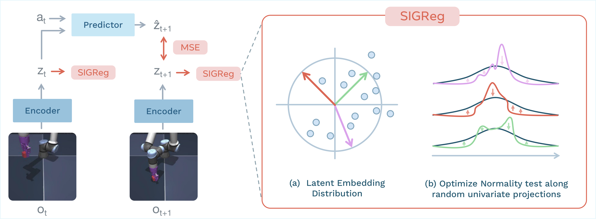
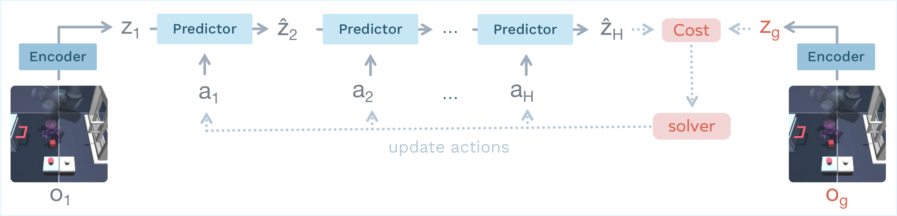
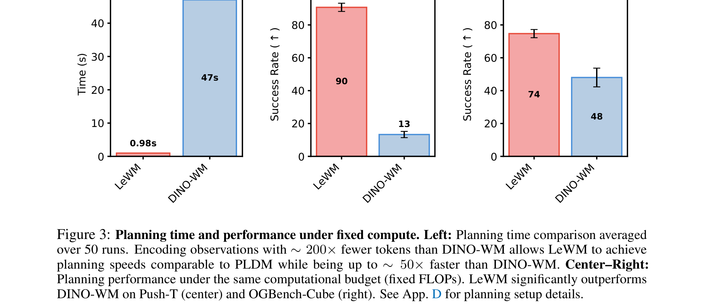
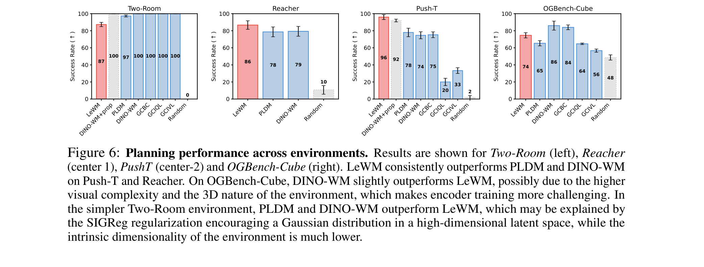

LeWorldModel：从像素端到端稳定训练的 JEPA world model
LeWorldModel: Stable End-to-End Joint-Embedding Predictive Architecture from Pixels
①开源贡献 Open-source Artifacts
开源程度很高且经核实可用：官方仓库 lucas-maes/le-wm（MIT 许可、~3.6k stars）提供了完整的训练 / 规划 / 评测脚本；四个环境的预训练权重与离线数据集均已上传 Hugging Face（quentinll/lewm-*）；并配有带视频 demo 的项目主页。训练 / 评测基础设施被单独抽成两个开源框架 stable-pretraining 与 stable-worldmodel。下表均为解读当日（2026-05-30）实际核实存在的链接。
| 类型 | 是否开源 | 内容 / 链接 |
|---|---|---|
| 代码 Code | ✔ | github.com/lucas-maes/le-wm — MIT 许可。含模型与训练目标 jepa.py、训练 train.py、规划/评测 eval.py，以及各环境的 Hydra config。LeWM 本体代码，依赖下面两个框架。 |
| 模型权重 Weights | ✔ | 4 个环境的 checkpoint（约 15M 参数）：lewm-pusht · lewm-cube · lewm-tworooms · lewm-reacher（HF Hub，部分另提供 Google Drive 备份；baseline 权重亦在 Drive）。 |
| 数据集 Dataset | ✔ | 4 个离线轨迹数据集（HDF5）：lewm-pusht · lewm-cube · lewm-tworooms · lewm-reacher（无 reward、无标注，纯 observation+action 轨迹）。 |
| 环境 / 框架 | ✔ | 评测与规划环境管理：stable-worldmodel（ref [50]，arXiv 2602.08968）；训练库：stable-pretraining（ref [49]）。环境基于 Gymnasium，覆盖 TwoRoom / PushT / OGBench-Cube / Reacher。 |
| 项目主页 / Demo | ✔ | le-wm.github.io — 含四个环境的规划 rollout 视频、latent 解码可视化与 t-SNE 视频。 |
②研究动机与贡献 Motivation & Contribution
背景与问题
人们想让 agent 直接从摄像头像素学会预测「我做这个动作之后世界会变成什么样」，也就是学一个 world model，然后在它的「想象」里做规划（planning），尤其是在 offline、reward-free（只有观测和动作、没有奖励标注）的设定下。JEPA（Joint-Embedding Predictive Architecture）是近年很受关注的一条路线：它不去重建像素，而是把观测编码进一个紧凑的 latent 空间，在 latent 里预测未来。但现有 JEPA 路线有两类各自的「痛」：
- 端到端但脆弱（以 PLDM 为代表）。从像素端到端学 encoder + predictor，靠 VICReg 风格的正则避免 collapse，但目标函数有多达 6 个 loss 项（prediction、variance、covariance、time-sim、time-var、time-cov，外加 IDM），系数 $(\alpha,\beta,\gamma,\zeta,\nu,\mu)$ 极难调；网格搜索的复杂度高达 $\mathcal{O}(n^6)$，训练曲线（图 Fig.19）多项噪声大、非单调，稳定性差，且其 anti-collapse 正则在理论上是 under-specified（缺乏保证）。
- 稳但「外挂」（以 DINO-WM 为代表）。直接冻结一个预训练大视觉模型（DINOv2）当 encoder，只学 predictor。这样确实不会 collapse，但不是端到端——表达能力被 pretraining 的先验框死；而且 DINOv2 把每帧编码成大量 patch token，导致 planning 时 rollout 极慢。
- 另一些 world model 需要额外信号：Dreamer 依赖任务/图像重建、TD-MPC 依赖 reward 与底层状态——都不满足「task-agnostic、reward-free、纯像素」这一目标。
本文的切入点
作者的核心观察是：JEPA 训练的全部「玄学」其实都在围绕一件事——怎么防止 representation collapse（见下文前置知识）。与其堆叠一大串启发式正则（再加 stop-gradient / EMA 这些缺乏明确目标函数的技巧），不如直接、显式地约束 latent embedding 的分布：只要逼迫 embedding 服从一个各向同性高斯（isotropic Gaussian），就既保证了特征不退化（方差不塌、维度不冗余），又有可证明的 anti-collapse 保证。这个约束由作者团队的 SIGReg（Sketched-Isotropic-Gaussian Regularizer，来自 LeJEPA）一项就能实现。于是整个 world model 的目标只剩两项：预测 + 分布正则。

核心贡献
- 第一个从原始像素端到端稳定训练的 JEPA world model。目标函数只有两项（next-embedding prediction + SIGReg），把可调 loss 超参从 6 降到 1（即正则权重 $\lambda$），且该超参可用 $\mathcal{O}(\log n)$ 的二分搜索高效调；不用 stop-gradient、不用 EMA、不用预训练 encoder。训练对架构与超参都鲁棒。
- 紧凑、高效的规划。约 15M 参数、单卡几小时可训。由于把每帧编码成比 DINO-WM 少约 200× 的 token，latent-space MPC 规划快至多 48×（PushT 上 full planning 0.98s vs DINO-WM 47s），并在多样的 2D/3D 操控、导航、运动任务上超越同为端到端的 PLDM、与 foundation-model 类方法竞争。
- latent 编码了物理结构。通过对 latent 做 probing（线性/非线性探针回归物理量）证明物体位置、角度、末端执行器位置等物理量可从 embedding 中恢复；并用 violation-of-expectation（VoE）测试证明模型对「物体瞬移」等违反物理连续性的事件会给出显著更高的 surprise。此外还观察到 temporal straightening（latent 轨迹自发变直）等涌现现象。
③前置知识 / 背景 Primer（从零开始）
这一节面向不熟悉该领域的读者，从头讲清楚理解 LeWM 所需的几个概念：world model、model-based planning、JEPA（在 latent 而非像素里预测）、representation collapse，以及 self-supervised learning、encoder/predictor、latent-space planning / MPC。已经熟悉的读者可直接跳到第 ④ 节。
3.1 什么是 world model？为什么 model-based planning 需要它
想象你在玩一个推箱子的游戏。你的大脑里有一个「如果我往左推，箱子会移到哪儿」的心理模型——你能在脑子里预演几步，挑出能把箱子推到目标的动作，而不必每个动作都真的去试一遍。这个「能预测『当前状态 + 一个动作 → 下一个状态』的模型」，在 AI 里就叫 world model（世界模型）。
形式上，给定当前观测 $o_t$（比如一帧画面）和一个动作 $a_t$，world model 要预测下一时刻的情况。有了它，agent 就能做 model-based planning（基于模型的规划）：在模型的「想象」里把若干候选动作序列 rollout（推演）出来，看哪条序列最能达成目标，再真正执行最优的那条。相比「直接试错」的 model-free 方法，这样做的好处是：
- 样本效率高——大量试错发生在「想象」里，不消耗真实交互；
- 适合 offline 设定——只要有一批固定的历史轨迹数据，就能学出模型，再用它生成合成经验、评估「反事实」的动作序列（「如果当初这么做会怎样」），无需在线与环境交互；
- 可复用——同一个 world model 可以服务很多不同的任务目标，因为它学的是「世界怎么运转」，而不是「怎么完成某个特定任务」。
本文关心的正是最纯粹的设定：只给原始像素 + 动作，没有 reward、没有任务标签、没有底层物理状态，要 offline 地学一个通用 world model。
3.2 什么是 JEPA？为什么在 latent 里预测，而不是重建像素
学 world model 最直白的做法是在像素空间直接预测下一帧图像（generative world model，如 DreamerV4、DIAMOND）。但这条路有个根本矛盾：像素里塞满了与决策无关的细节——光影、纹理、背景噪点、远处飘动的草……要把这些全部精确重建出来，模型会把大量容量浪费在「画得逼真」上，而这些细节对「把箱子推到哪」毫无帮助。
JEPA = Joint-Embedding Predictive Architecture（由 LeCun 提出），换了个思路：不在像素里预测，而在一个抽象的 latent（embedding）空间里预测。它有两个部件：
- encoder $\mathrm{enc}_\theta$：把一帧观测 $o_t$ 压成一个低维向量 $z_t = \mathrm{enc}_\theta(o_t)$，即 latent / embedding。这一步相当于「只保留画面里重要的、与动力学相关的信息，丢掉无关细节」。
- predictor $\mathrm{pred}_\phi$：在 latent 空间里，根据当前 latent $z_t$ 和动作 $a_t$，预测下一时刻的 latent $\hat z_{t+1} = \mathrm{pred}_\phi(z_t, a_t)$。
训练时，把真实的下一帧也用 encoder 编成 $z_{t+1}$ 作为「目标」，让 predictor 的预测 $\hat z_{t+1}$ 去逼近它。关键点：预测的对象是「向量」，损失算在 embedding 上，而不是逐像素。打个比方——要预测「明天天气」，你只需要预测「晴/雨、气温、风力」这几个概念，而不需要把明天天空中每一朵云的形状都画出来。JEPA 就是只在「概念层」（latent）上对齐未来，因此能把建模能力集中在真正重要的结构上，更高效、更鲁棒、更易于下游规划。
3.3 representation collapse：JEPA 最大的坑，以及怎么避开
JEPA 的预测目标有一个致命的「作弊捷径」。仔细想：如果 encoder 把所有不同的画面都映射成同一个常数向量（比如永远输出全 0），那么「预测下一帧 latent」这件事就变得毫无难度——因为不管输入什么，目标都是同一个常数，predictor 随便输出那个常数就能把 prediction loss 压到 0。
这种「所有输入塌缩成几乎相同表示」的退化现象，就叫 representation collapse。它会把 prediction loss 降到很低（看似训练得很好），但学出来的 latent 毫无信息、完全不可用。防止 collapse 是训练 JEPA 的核心挑战。常见的几类对策各有代价：
- EMA + stop-gradient（I-JEPA、V-JEPA 等）：用一个缓慢滑动平均的「目标 encoder」，并切断目标侧的梯度，制造不对称来防塌缩。问题：EMA / SG 缺乏明确的优化目标，理论理解有限，且引入额外的不稳定与调参负担。
- 冻结预训练 encoder（DINO-WM）：encoder 不训练，自然不会塌缩。代价是非端到端、受限于 pretraining 的先验。
- 方差/协方差正则（VICReg 系，PLDM 采用）：显式要求每个特征维度有足够方差（不塌）、维度间去相关（不冗余）。代价是项数多、系数难调。
LeWM 的做法属于第三类，但更彻底、更省。它不去逐项约束方差/协方差，而是直接把整批 embedding 的分布逼成一个各向同性高斯 $N(0, I)$——高斯本身就「每个方向都有单位方差、各方向不相关」，因此一旦匹配成功，方差不塌、维度不退化、collapse 被根除，而且这是有理论保证的（见第 ④ 节 Cramér–Wold 定理）。一个分布约束，顶替了一堆启发式正则。
3.4 三个支撑概念：self-supervised、encoder/predictor、latent-space planning / MPC
Self-supervised representation learning（自监督表示学习）
「自监督」指不依赖人工标注，而是从数据自身构造监督信号来学表示。JEPA 就是典型：监督信号是「下一帧的 embedding」，它来自数据本身（把真实的下一帧编码一下就有了），不需要任何人去标注。LeWM 进一步是 reward-free 的——连「奖励」这种弱标注都不需要，纯粹从「观测序列怎么演化」里学。
encoder 与 predictor 的分工
再强调一次这对搭档：encoder 负责「感知」——把高维像素压成紧凑 latent（本文用一个 ~5M 参数的 ViT-Tiny）；predictor 负责「动力学」——在 latent 里根据动作推演未来（本文用一个 ~10M 参数的 Transformer，带因果掩码以利用历史帧）。两者在 LeWM 里是联合、端到端训练的（这正是它区别于 DINO-WM 的地方）。
latent-space planning 与 MPC（Model Predictive Control）
训练好 world model 后，怎么用它做事？答案是在 latent 空间里规划。给定起始观测 $o_1$ 和目标观测 $o_g$，把两者都编码成 latent；然后搜索一段动作序列，让 predictor 从起始 latent 一路 rollout 到的末态，尽量接近目标 latent。这是一个有限步的最优控制问题，用采样式优化器（本文用 CEM，Cross-Entropy Method）反复「采样动作→在模型里推演→挑成本最低的精英→收紧采样分布」来解。
但 autoregressive rollout 越长、累积的预测误差越大。MPC（Model Predictive Control，模型预测控制）是工程上的标准对策：每次只规划一小段、只执行其中头 $K$ 个动作，然后从新的真实观测重新规划（receding horizon，滚动时域）。这样能不断用真实反馈纠偏，是 LeWM 测试时的控制范式。
④方法 Method
LeWM 分两个阶段：训练阶段从 offline、reward-free 的轨迹里端到端学出 encoder + predictor（目标只有两项 loss）；推理阶段冻结模型，在其 latent 空间里用 CEM + MPC 做 goal-conditioned 规划。下图是训练流程总览。

4.1 学习 latent world model
数据与设定
完全 offline、reward-free：训练数据是长度 $T$ 的轨迹，每条由原始像素观测 $o_{1:T}$ 和对应动作 $a_{1:T}$ 组成。轨迹来自任意 behavior policy（可以是伪专家或探索性的），只要能充分覆盖环境动力学即可，不要求最优。目标不是优化某个任务的行为，而是学到能刻画环境动力学、之后可被控制 / 适配到多种任务的通用表示。
模型架构
两个部件，定义即：
$$z_t = \mathrm{enc}_\theta(o_t), \qquad \hat z_{t+1} = \mathrm{pred}_\phi(z_t, a_t).$$- encoder：默认是 ViT-Tiny（patch size 14、12 层、3 头、hidden 192，约 5M 参数）。观测 embedding $z_t$ 取最后一层的
[CLS]token，再经一个 1 层带 BatchNorm 的 MLP 做投影。这一步投影是必要的：ViT 最后一层的 LayerNorm 会破坏 anti-collapse 目标的有效优化，所以要把表示映射到一个新空间再施加 SIGReg。 - predictor：一个 6 层、16 头、10% dropout 的 Transformer（约 10M 参数）。动作通过 AdaLN（Adaptive Layer Normalization，参数初始化为 0）逐层注入，使动作对 predictor 的影响「渐进式」地起作用、稳定训练。predictor 以 $N$ 帧历史表示为输入，带因果掩码地 autoregressively 预测下一帧表示，其后也接一个与 encoder 同款的 projector。
合计约 15M 参数，单张 NVIDIA L40S GPU 即可训练。
训练目标：两项 loss
① 预测项（teacher-forcing 的 next-embedding prediction）：
$$\mathcal{L}_{\text{pred}} \triangleq \lVert \hat z_{t+1} - z_{t+1}\rVert_2^2, \qquad \hat z_{t+1} = \mathrm{pred}_\phi(z_t, a_t).$$这一项逼迫 encoder 学出「对 predictor 而言可预测」的表示。其中 $z_{t+1}=\mathrm{enc}_\theta(o_{t+1})$ 是真实下一帧编码出的目标，$\hat z_{t+1}$ 是 predictor 的预测，两者算 MSE。但仅有这一项必然导致 collapse（所有输入塌成常数即可把它压到 0），所以需要第二项。
② 反塌缩正则项 SIGReg（Sketched-Isotropic-Gaussian Regularizer）：逼迫 latent embedding 分布匹配各向同性高斯。设 $Z\in\mathbb{R}^{N\times B\times d}$ 为在历史长度 $N$、batch $B$、维度 $d$ 上收集到的 embedding。高维空间直接检验正态性很难（经典正态性检验都是为一维设计的），SIGReg 的巧思是「sketch」——把 embedding 投影到 $M$ 个随机单位方向 $u^{(m)}\in\mathbb{S}^{d-1}$ 上得到一维投影 $h^{(m)}=Zu^{(m)}$，对每个一维投影施加 Epps–Pulley 正态性检验统计量 $T(\cdot)$ 并求平均：
$$\mathrm{SIGReg}(Z) \triangleq \frac{1}{M}\sum_{m=1}^{M} T\big(h^{(m)}\big).$$其中 Epps–Pulley 统计量比较一维投影的经验特征函数 $\phi_N(t;h)=\frac1N\sum_n e^{ith_n}$ 与标准高斯 $N(0,1)$ 的特征函数 $\phi_0$ 的差：
$$T^{(m)} = \int_{-\infty}^{\infty} w(t)\,\big|\phi_N(t;h^{(m)}) - \phi_0(t)\big|^2\,dt,\qquad w(t)=e^{-t^2/2\kappa^2}.$$实际计算时这个积分用梯形数值积分（trapezoid，节点 $T$ 均匀分布在 $[0.2,4]$）近似。为什么「匹配所有一维投影」就等价于「匹配整个高维分布」？——这正是 Cramér–Wold 定理保证的：
$$\mathrm{SIGReg}(Z)\to 0 \iff \mathbb{P}_Z \to N(0, I).$$直觉上：一个高维分布的「所有方向上的投影」唯一决定了它本身；只要每个方向看起来都是标准高斯，整体就是各向同性高斯。这给了 LeWM 可证明的 anti-collapse 保证——高斯各方向方差为 1，特征不可能塌成常数，也不可能维度冗余。
完整目标把两项加权相加（注意 SIGReg 是逐时间步施加的）：
$$\mathcal{L}_{\text{LeWM}} \triangleq \mathcal{L}_{\text{pred}} + \lambda\,\mathrm{SIGReg}(Z).$$训练逻辑可用一段伪代码概括（原文 Algorithm 1）：
emb = encoder(obs)# (B,T,D)
next_emb = predictor(emb, actions)
pred_loss = MSE(emb[:,1:], next_emb[:,:-1])# next-embedding prediction
sigreg_loss = mean(SIGReg(emb.transpose(0,1)))# 逐步施加，anti-collapse
return pred_loss + lambd * sigreg_loss
4.2 latent planning（CEM + MPC）

测试时是 goal-conditioned 的轨迹优化。latent 转移为 $\hat z_{t+1}=\mathrm{pred}_\phi(\hat z_t, a_t)$、$\hat z_1=\mathrm{enc}_\theta(o_1)$。优化动作序列以最小化末端 latent 与目标 latent 的匹配代价：
$$\mathcal{C}(\hat z_H) = \lVert \hat z_H - z_g\rVert_2^2,\qquad z_g=\mathrm{enc}_\theta(o_g);\qquad a_{1:H}^* = \arg\min_{a_{1:H}} \mathcal{C}(\hat z_H).$$用 CEM（Cross-Entropy Method）求解：每步从高斯采样分布里采若干候选动作序列、在 world model 里 rollout 算 cost、选出 cost 最低的「精英」更新采样分布的均值与方差，迭代收紧。由于 autoregressive rollout 会随 horizon 增长累积误差，作者采用 receding-horizon MPC：只执行优化出的前 $K$ 个动作，再从新观测重规划。
⑤实验评估 Evaluation
评测设置
- 环境 / 数据集（4 个，2D & 3D，连续动作空间）：
- TwoRoom：2D 导航，两个房间被一道带门的墙隔开，agent（红点）须穿门走到目标位置。10k 轨迹（均长 92 步）。
- PushT：2D 操控，agent（蓝点）须把 T 形块推到目标姿态，机器人基准常用。20k 专家轨迹（均长 196 步）。
- OGBench-Cube：3D 机械臂操控，末端执行器抓起立方体放到目标位（单 cube 变体）。10k 轨迹（各 200 步），视觉复杂度更高。
- Reacher（DeepMind Control Suite）：2D 平面内两关节臂到达目标构型。10k 轨迹（各 200 步），数据由 SAC policy 采集。
- 对比基线：DINO-WM（冻结 DINOv2 的 foundation-model 类 world model）、PLDM（最接近本文、同为端到端 JEPA，7 项 loss）、GCBC（goal-conditioned behavioral cloning）、GCIQL 与 GCIVL（两种 goal-conditioned offline RL）。为公平，DINO-WM 去掉了它原本可用的 proprioceptive 输入。每个方法的超参在所有环境间固定。
- 指标：控制看 Success Rate（SR，↑ 越高越好）；规划效率看 planning time（s，↓）；latent 物理结构看 probing 的 MSE（↓）与 Pearson r（↑）；物理理解看 VoE 的 surprise（预测 MSE）是否在扰动处显著升高。
主要结果（一）：规划效率 + 固定算力下的性能

主要结果（二）：四个环境的控制成功率

| 方法 | TwoRoom | Reacher | PushT | OGBench-Cube |
|---|---|---|---|---|
| LeWM（本文） | 87 | 86 | 90（固定算力） | 74（固定算力） |
| DINO-WM | 100 | 79 | 13（固定算力） | ~80（略高于 LeWM） |
| PLDM | 100 | 78 | 72（比 LeWM 低约 18 个点） | — |
注：上表数字读自原文 Figure 3 / 6 的柱状标注，部分为近似值；PushT / OGBench-Cube 的对比在「固定算力」设定下尤为悬殊。
怎么读这些数字？LeWM 的卖点不是「在每个任务上都最强」，而是在极低算力 / 极快规划下保持有竞争力的成功率：在更有挑战的 PushT 上比同为端到端的 PLDM 高约 18 个点；即便 DINO-WM 享有 proprioceptive 信息，LeWM（纯像素）在 PushT 上仍反超它，说明它确实捕捉到了任务相关量。不利的两处也很诚实：(1) OGBench-Cube 这种 3D、视觉复杂场景，DINO-WM 因 pretraining 先验略占优——端到端学一个好 encoder 在这里更难；(2) 最简单的 TwoRoom 反而吃亏，作者解释这是 SIGReg 的潜在局限——该环境内在维度很低、数据多样性低，硬要在高维 latent 里匹配各向同性高斯反而让表示「不够结构化」。
主要结果（三）：latent 里的物理结构
Probing（探针回归物理量）。在 PushT 上训练线性 / 非线性探针从 latent 预测物理量，LeWM 始终优于 PLDM，并与 DINOv2 这种在约 124M 图像上预训练的大模型有竞争力（下表节选原文 Table 1，MSE↓ / r↑）：
| 物理量 | 模型 | Linear MSE↓ | Linear r↑ | MLP MSE↓ | MLP r↑ |
|---|---|---|---|---|---|
| Agent Location | DINO-WM | 1.888 | 0.977 | 0.003 | 0.999 |
| PLDM | 0.090 | 0.955 | 0.014 | 0.993 | |
| LeWM | 0.052 | 0.974 | 0.004 | 0.998 | |
| Block Location | DINO-WM | 0.006 | 0.997 | 0.002 | 0.999 |
| PLDM | 0.122 | 0.938 | 0.011 | 0.994 | |
| LeWM | 0.029 | 0.986 | 0.001 | 0.999 | |
| Block Angle | DINO-WM | 0.050 | 0.979 | 0.009 | 0.995 |
| PLDM | 0.446 | 0.745 | 0.056 | 0.972 | |
| LeWM | 0.187 | 0.902 | 0.021 | 0.990 |
OGBench-Cube 上的更全面 probing（原文 Table 4）显示：LeWM 在位置类量（block position、end-effector position）上最好；但所有方法在 block 旋转（quaternion / yaw）这类细粒度旋转量上都很差——细粒度旋转信息很难压进紧凑 latent，这与定性 rollout 中「末端执行器朝向细节会丢失」一致。
解码可视化 + t-SNE + temporal straightening。尽管训练从不用重建 loss，事后训练一个 decoder 仍能从 192 维 latent 重建出场景（原文 Figure 8），说明紧凑 latent 保留了足够的物理状态信息；t-SNE 显示 latent 保留了空间邻接与相对位置结构（Figure 9）；更有趣的是，latent 轨迹随训练自发变「直」（temporal straightening，相邻 latent 速度向量的 cosine 相似度升高，Figure 17）——LeWM 甚至比专门加了时间平滑正则的 PLDM 还要直，是一种 emergent（涌现）现象。
主要结果（四）：物理理解的 VoE 测试
沿用 violation-of-expectation 范式：构造三类轨迹——正常的、视觉扰动的（物体颜色突变）、物理扰动的（物体瞬移到随机位置，违反物理连续性），看模型的 surprise（预测 MSE）是否在扰动处升高。结论（Figure 10）：在所有三个环境里，「瞬移」这类物理违例都会触发显著更高的 surprise（配对 t 检验 $p<0.01$）；而单纯的颜色变化引发的 surprise 较弱、不显著——说明 LeWM 对物理扰动比对视觉扰动更敏感，符合一个「懂物理」的 world model 应有的样子。
消融 / 分析
- SIGReg 内部参数（投影数 / 积分节点）——不敏感（Figure 15 中、右）：变动它们对 PushT 成功率几乎无影响，因此真正要调的只有 $\lambda$。
- 正则权重 $\lambda$——很鲁棒（Figure 16）：$\lambda\in[0.01,0.2]$ 时 SR 都 > 80%，在 $\lambda\approx0.09$ 达峰；只有到 $\lambda=0.5$（正则压过预测项）才骤降。$\lambda$ 是唯一有效超参，可二分搜索。
- embedding 维度——需够大但很快饱和（Figure 15 左）：维度太小（约 <184）性能掉得厉害；超过阈值后收益递减。
- predictor 大小（Table 6）：ViT-S 最佳（96.0），ViT-T 偏小（80.67）、ViT-B 反而略降（86.7）。
- predictor dropout（Table 9）：适度 dropout=0.1 最好（96.0），无 dropout（78.0）或过大（0.5→66.67）都更差——适度 dropout 起到正则、提升泛化的作用。
- encoder 架构——与具体骨干无关（Table 8）：把 ViT 换成 ResNet-18 仍有竞争力（94.0 vs 96.0），ViT 仅略占优，说明方法对视觉骨干不挑。
- 要不要加 decoder/重建 loss——不要（Table 7）：加重建 loss 反而略降（86.0 vs 96.0），印证 JEPA 目标已抓到规划所需信息，重建只会鼓励编码无关视觉细节。
- 训练方差——稳（Table 5）：三个随机种子下 LeWM 96.0±2.83，方差低；PLDM 78.0±5.0 方差更大。训练曲线（Figure 18 vs 19）也显示 LeWM 两项 loss 平滑单调下降，而 PLDM 的七项里多项噪声大、非单调。
⑥洞见 Insights
局限与未来
作者自陈了几点边界：(1) 规划仍受限于短 horizon，autoregressive rollout 误差累积，长视野推理需要 hierarchical world modeling。(2) 依赖覆盖充分的 offline 数据，采集成本不低；尤其在内在维度极低、多样性差的简单环境（如 TwoRoom），SIGReg 强行匹配高维高斯反而有害——这是该正则的明确短板，未来或可在大规模自然视频上 pretrain 以提供更强先验。(3) 当前需要 action 标注来预测未来状态，作者提出可用 inverse dynamics modeling 学习未来动作表示、减少对显式动作标注的依赖。此外细粒度旋转量难以编码也是普遍未解问题。
与相关工作的关系
基于本文自身的论述：相对 generative world model（IRIS、DIAMOND、DreamerV4、Genie 等在像素空间建模、且常需 reward），LeWM 走 reward-free、在 latent 里建模的 JEPA 路线。相对 masked-prediction 类 JEPA（I-JEPA、V-JEPA、Brain-JEPA，靠 EMA+SG 防塌缩），LeWM 不用这些缺乏明确目标的技巧。相对 DINO-WM（冻结预训练 encoder、非端到端），LeWM 端到端、表达力不被 pretraining 框死、且规划快得多。最接近的是 PLDM（同为端到端 JEPA、用 VICReg 系正则），LeWM 把它的 7 项 loss 简化为 2 项、超参从 6 降到 1、训练更稳更快、控制更好。其反塌缩正则 SIGReg 来自同团队的 LeJEPA（ref [25]），本文是把这套「provable, heuristic-free」的自监督理念首次成功落到从像素端到端学 world model 上。